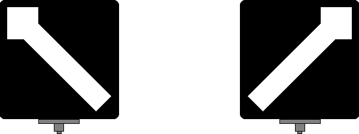
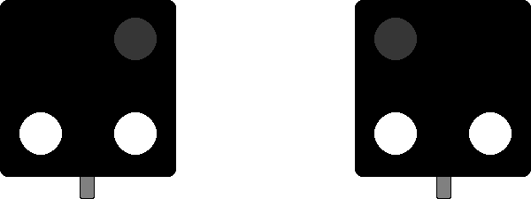
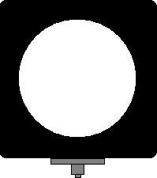
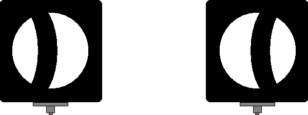

Informationen und Erklärungen zum Signal Wn 2 (Weichensignal).
1
BedeutungGebogener Zweig.
2
Beschreibung
Von der Weichenspitze oder vom Herzstück aus gesehen.
Formsignal:
Ein weißer Pfeil oder Streifen auf schwarzem Grund zeigt entsprechend der Ablenkung schräg nach links oder rechts aufwärts.

Lichtsignal:
Zwei nebeneinander stehende weiße Lichter.

3
Innenbogenweichen
Bei Innenbogenweichen zeigt das Signal den Fahrweg durch den stärker gebogenen Zweig an.
4
Außenbogenweichen
Bei Außenbogenweichen wird in beiden Stellungen das Signal Wn 2 verwendet, wobei der Pfeil je nach der Richtung des abzweigenden Gleises nach links oder rechts schräg aufwärts zeigt.
5
Vom Herzstück aus gesehenFormsignal:
Vom Herzstück aus gesehen: (bei einfachen Weichen und Innenbogenweichen) Eine runde weiße Scheibe auf schwarzem Grund.

6
Außenbogenweichen (Vom Herzstück aus gesehen)Formsignal:
Vom Herzstück aus gesehen: (bei Außenbogenweichen) Eine nach links oder rechts geöffnete Sichel auf runder weißer Scheibe mit schwarzem Grund.

7
Hinweis zur Sichel-Richtung
Bei Fahrten aus dem linksseitigem Gleis ist die Sichel nach links, für Fahrten aus dem rechtsseitigem Gleis ist die Sichel nach rechts geöffnet.